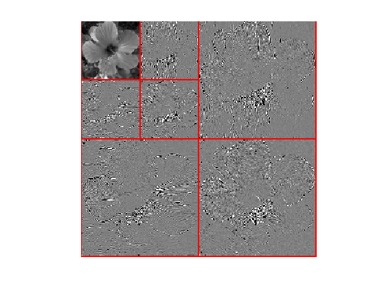
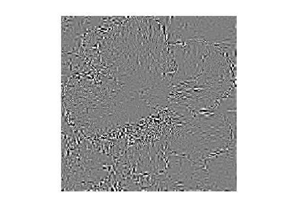
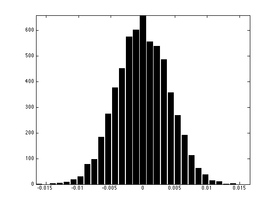
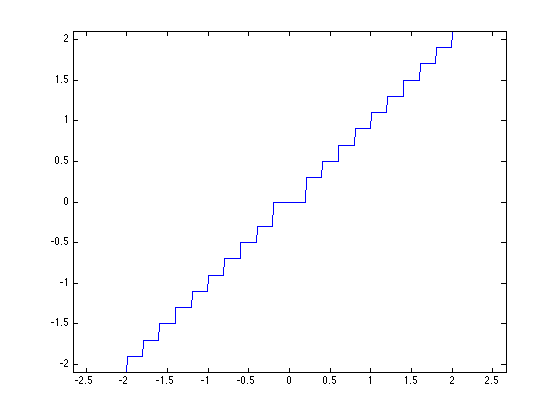
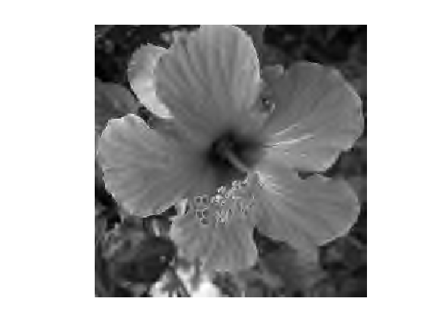
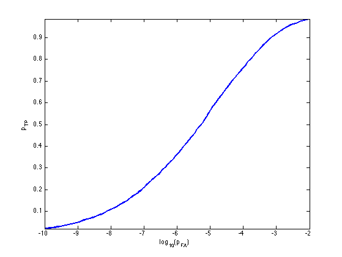

Wavelet Domain Image Watermarking
This numerical tour explores robust watermarking over the wavelet domain.
Contents
Many thanks to Patrick Bas and Teddy Furon for their useful advices on digital image watermarking.
Installing toolboxes and setting up the path.
You need to download the following files: signal toolbox and general toolbox.
You need to unzip these toolboxes in your working directory, so that you have toolbox_signal and toolbox_general in your directory.
For Scilab user: you must replace the Matlab comment '%' by its Scilab counterpart '//'.
Recommandation: You should create a text file named for instance numericaltour.sce (in Scilab) or numericaltour.m (in Matlab) to write all the Scilab/Matlab command you want to execute. Then, simply run exec('numericaltour.sce'); (in Scilab) or numericaltour; (in Matlab) to run the commands.
Execute this line only if you are using Matlab.
getd = @(p)path(p,path); % scilab users must *not* execute this
Then you can add the toolboxes to the path.
getd('toolbox_signal/'); getd('toolbox_general/');
Digital Image Watermarking
Digital media watermarking is a popular image forensic problem. It requires to embed a signature into a sound, image, video, 3D mesh, etc.
An good source of information regarding digital watermarking is the book
Digital Watermarking and Steganography, 2nd Ed, Ingemar J. Cox, Matthew L. Miller, Jeffrey Bloom, Morgan Kaufmann, 2007.
One can also visit the BOWS-2 challenge homepage for a state of the art digital watermarking implementation.
We consider here a robust watermarking embedding, i.e. the goal is to embed a watermark that is both impercevable and difficult to remove (by attack such as compression, denoising, adding noise, blurring, etc).
This is somehow conflicting goals since impercevable information is likely to be removed by an efficient compression or denoising algorithm. An efficient watermarking scheme should thus use more clever tools than state of the art denoising/compression algorithms.
Note also that we perform here "0 bit" watermarking, i.e. we do not embed a meaningful message within the watermarking. We are only interested in testing the presence of a given watermark.
Here we bench a wavelet method for the embedding of a single watermark. We check how much the watermark can be detected after various attack. Depending on a probability of false alarm, we compute the probability of detecting the watermark.
Watermark Embedding
A watermark is computed as a weighted random vector that is added to the wavelet coefficient.
The weighting of the watermark vector takes into account the amplitude of the host coefficient in order to reduce visual distortion. This also increases the robustness to denoising and compression attacks.
Load an image \(f \in \RR^N\) of \(N = n \times n\) pixels.
n = 256;
name = 'hibiscus';
f = load_image(name, n);
f = rescale(sum(f,3));
Display the original image.
clf; imageplot(f);
Shortcut for the wavelet transform \(\Psi : f \in \RR^N \mapsto a \in \RR^N\) that maps an image \(f\) to wavelet coefficients \(a\). We note its inverse \(\Psi^{-1}\) using the shortcut PsiS.
Jmin = log2(n)-2; Psi = @(f)perform_wavelet_transf(f, Jmin, +1); PsiS = @(a)perform_wavelet_transf(a, Jmin, -1);
Compute the wavelet coefficients.
a = Psi(f);
Display the wavelet coefficients.
clf; plot_wavelet(a,Jmin);
The coefficients to be watermarked \(x_0 \in \RR^P \) is only a subset \( x_0 = (a_i)_{i \in I} \) of the total set of coefficients, where \(\abs{I}=P\).
We select here only the fine scale wavelets.
A = ones(n); A(1:2^Jmin,1:2^Jmin) = 0; I = find(A(:)); P = length(I);
Extract the coefficients \(x_0\).
x0 = a(I);
The watermarking is embedded using a multiplicative rule as \[ x_i = (x_0)_i + \rho \abs{ (x_0)_i } w_i \] where \(w\) is a random Gaussian vector and where \(\rho > 0\) is a constant that ensure that \(\norm{x_0-x}\) is a given deviation value.
Generate the base watermark vector \(w \in \RR^P\).
w = randn(P,1);
Target embedding PSNR (should be quite large for the embedding to be unoticeable).
psnr_embedding = 50;
Exercice 1: (check the solution) Compute rho so that PSNR(y,x0,1)=snr_embedding.
exo1;
rho = 0.0799.
Exercice 2: (check the solution) According to you, for which PSNR the watermark becomes unoticeable?
exo2;
Perform the embedding \(x=x_0+\rho\abs{x_0}w\).
x = x0 + rho*abs(x0).*w;
The distortion of the embedding is measured using the PSNR \[ \text{PSNR}(x,x0) = -20 \log_{10}( \norm{x-x0}/\sqrt{P} ). \]
Check the PSNR of embedding.
disp(['PSNR(x,x0) = ' num2str(psnr(x,x0,1), 3) 'dB.']);
PSNR(x,x0) = 50dB.
Given the watermarked coefficients \(x \in \RR^P\), a watermarked image \(f_1 \in \RR^N\) is reconstructed using the inverse wavelet transform \(\Psi^{-1}\) as \[ f_1 = \Psi^{-1}(a_1) \qwhereq (a_1)_i = \choice{ x_i \qifq i \in I, \\ a_i \quad\text{otherwise.} }\]
Compute the image with the watermark embedded.
a1 = a; a1(I) = x; f1 = PsiS(a1);
Display the watermark \( \delta = \Psi^{-1}(a-a_1) = f - f_1 \) over the spacial domain (with contrast boosting).
delta = f-f1; clf; imageplot( clamp(delta/std(delta(:)),-3,3) );
Watermark Detection
The watermark is detected (or not detected) from an input vector \(y \in \RR^P\) using a detector function \(C(y,w) \in \RR\) where \(w \in \RR^P\) is the base watermark vector. Usually, a large value of \(C\) means that \(y\) is likely to come from a watermarked content.
The detection is carried over by a simple thresholding, and the watermark is declared to be present if \[ C(y,w)>T \] where \(T \in \RR\) is a threshold that should be set to guarantee a given probability of false alarms (i.e. ratio of contents declared to be watermarked whereas they were not watermarked).
The detection corresponds to an hypothesis testing. One assumes that \(y=A(x)\) is obtained by attacking some vector \(x\), and one has the following alternative depending on wether the content \(x\) is watermarked or not: \[ \choice{ (\Hh_0) \quad x=x_0+\rho\abs{x_0}w, \\ (\Hh_1) \quad x=x_0. } \]
The two important quantities to monitor is the probability of false alarms \[ p_{\text{FA}} = \PP_w\pa{ C(y,w)>T \:\vert\: \Hh_1 } \] and the probability of true positives \[ p_{\text{TP}} = \PP_w\pa{ C(y,w)>T \:\vert\: \Hh_0 }. \] Note that here \(\PP_w\) refers to the probability of an event with respect to the randomization of \(w\).
The goal is to design a watermarking scheme (i.e. an embedding strategy and a detection strategy) in order to maximize \(p_{\text{TP}}\) for a given \(p_{\text{FA}}\).
The simplest detector is a normalized correlation \[ C(y,w) = \frac{\dotp{y}{w}}{\norm{y}\norm{w}}. \]
C = @(y,w)sum(w.*y)./sqrt( sum(w.^2).*sum(y.^2) );
To estimate easily the probability of false alarm, we make the asumption that \(y\) is close enough to \(x_0\) to estimate \(p_{\text{FA}}\) on the clean original signal \[ p_{\text{FA}} \approx \PP_w( C(x_0,w)>T ) \]
Exercice 3: (check the solution) Using a Monte Carlo simulation (generation of the order of \(10^3\) watermarks, display the histogram of the repartition of \(C(x_0,w)\). Compute the variance \(\sigma_0^2\) of this distribution.
exo3;
We make another approximation : we approximate this density probability with a Gaussian density of mean 0 and variance \(\si_0^2\). Under this assumption, one has \[ p_{\text{FA}} \approx 1 - G_{\si_0}(T) = 1 - \frac{1}{2} \pa{ 1 + \text{erf}\pa{\frac{T}{\sqrt{2} \si_0}} } \] where \(G_{\si_0}\) is the cumulative density function of the Gaussian of variance \(\si_0^2\).
Hence one can use the threshold \[ T = \sqrt{2} \sigma_0 \text{erf}^{-1}(1-2 p_{\text{FA}}) \] This is an example of determination of threshold \(T\) given a value of \( p_{\text{FA}} \).
pfa = 1e-3; T = sqrt(2)/2 * sigma0 * erfinv(1-2*pfa);
Actually, it is possible to compute exactly this probability of false alarm as \[ p_{\text{FA}} = 1 - B(T^2 ; 1/2, (P-1)/2), \] where \(B\) is the incomplete beta function (use betainc function) and \(P\) is the dimension.
Exercice 4: (check the solution) Compare, for various values of \(T\) the estimation obtained by the Gaussian approximation with the true value obtained with the incomplete beta function.
exo4;
Quantization Attack
A compression attack is simulated by quantizing the wavelet coefficients. We consider here a dead zone quantization attack.
Quantization step \(\tau\) (the larger, the more aggressive the compression.
tau = .2;
A quantization attack reads: \[ A() = \text{sign}(v) (\abs{v} + 1/2) \tau \qwhereq v = \lfloor \frac{\abs{x}}{\tau} \rfloor \text{sign}(x) \]
Quantization/Dequantization operators, and attack operator.
Quant = @(x)floor(abs(x/tau)).*sign(x); DeQuant = @(v)sign(v) .* (abs(v)+.5) * tau; A = @(x)DeQuant(Quant(x));
Display it.
t = linspace(-2,2,500);
plot(t, A(t));
axis('equal');
 Attacked watermarked signal
y = A(x);
Display the attacked image.
a1 = a; a1(I) = y; f1 = PsiS(a1);
Display the watermarked image.
clf; imageplot(clamp(f1));
Compute the detection \(C(y,w)\).
disp(['C(y,w) = ' num2str(C(y,w), 2) '.']);
C(y,w) = 0.015.
The probability of true positive is \[ p_{\text{TP}} = \PP_w\pa{ C(A(x_0 + \rho\abs{x_0}w),w)>T }. \]
Exercice 5: (check the solution) Compute, by Monte Carlo sampling (i.e. draw at random many \(w\)) the distribution of \(C(A(x),w)\) for \(x = x_0 + \rho \abs{x_0} w\). Store the different realization of \(C(A(x),w)\) in a vector c. Note: the value of \(\rho\) should be recomputed for each \(w\).
exo5;

Exercice 6: (check the solution) Compute, for a varying value of \( p_{\text{FA}} \), the corresponding value of \( p_{\text{TP}} \). Display the resulting curve (ROC curve). This computation should be performed experimentally using e.g. 1000 random sampling.
exo6;
Exercice 7: (check the solution) Try different attack strengths, by changing the value of \(\tau\). For a \(p_{\text{FA}}=10^{-6}\), determine the value of \(\tau\) for witch \(p_{\text{TP}}\) drops bellow \(0.2\).
exo7;
Exercice 8: (check the solution) Try different attacks, for instance on the image itself (blurring, denoising, etc.).
exo8;